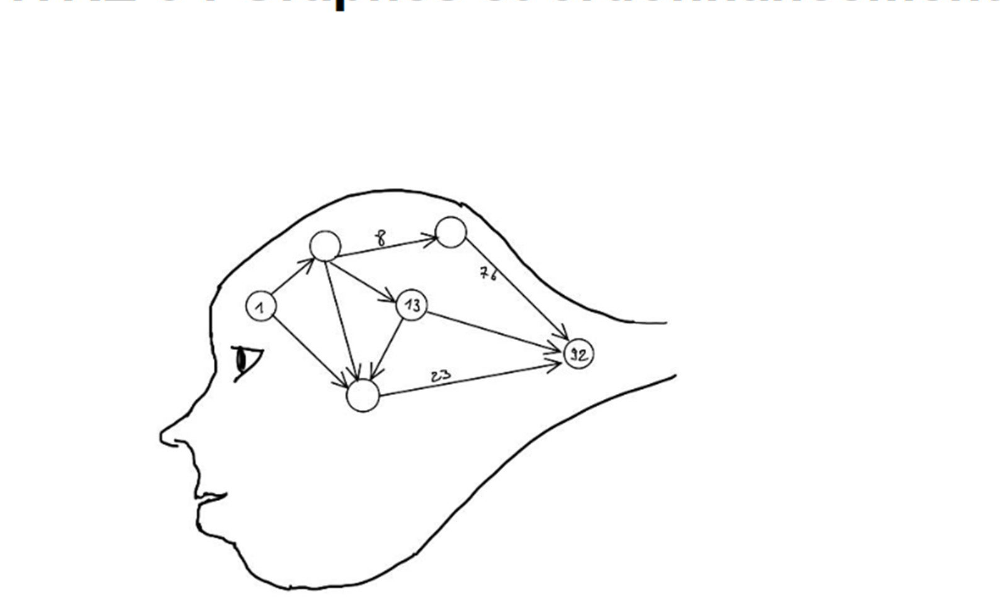

Chapitre 5 — Graphes et ordonnancement
A. Graphe orienté

Un graphe orienté est noté \(G=(X;U)\), où \(X\) est l’ensemble de ses sommets et \(U(x)\) l’ensemble des successeurs du sommet \(x\). Un arc de \(x\) vers \(y\) se note \(x\to y\).
I. Tableaux des prédécesseurs et des successeurs
Le tableau des successeurs indique, pour chaque sommet, les sommets atteints par un arc qui en part. Le tableau des prédécesseurs donne les sommets d’où arrivent les arcs.
| Sommet \(x\) | Successeurs \(U(x)\) |
|---|---|
| A | A, B |
| B | A, C |
| C | A, D |
| D | A, B |
| E | D |
| Sommet \(x\) | Prédécesseurs \(U^{-1}(x)\) |
|---|---|
| A | A, B, C, D |
| B | A, D |
| C | B |
| D | C, E |
| E | \(\varnothing\) |
On peut obtenir le tableau des prédécesseurs en inversant les arcs du tableau des successeurs, ou en repérant les flèches qui arrivent à chaque sommet.
Exercice 52
Construire le graphe défini par le tableau des successeurs suivant.
| Sommet | Successeurs |
|---|---|
| A | A, D |
| B | C, E, F |
| C | C, D, E |
| D | F |
| E | E, C |
| F | E |
Retrouver les successeurs à partir des prédécesseurs
| Sommet | Prédécesseurs |
|---|---|
| A | \(\varnothing\) |
| B | A, C |
| C | A |
| D | B, C |
| E | D |
| F | D, E |
| Sommet | Successeurs |
|---|---|
| A | B, C |
| B | D |
| C | B, D |
| D | E, F |
| E | F |
| F | \(\varnothing\) |
II. Chemin, boucle, circuit
1) Chemin
Un chemin est une suite d’arcs qui permet d’aller d’un sommet à un autre. Sa longueur est le nombre d’arcs parcourus.
Dans l’exemple précédent, \(A\to B\) est un chemin de longueur 1, \(A\to B\to D\) est un chemin de longueur 2, et \(A\to B\to D\to E\to F\) est un chemin de longueur 4. Il n’existe pas de chemin de \(B\) vers \(C\).
2) Circuit et 3) Boucle
Un circuit est un chemin dont l’origine et l’extrémité sont le même sommet. Une boucle est un circuit de longueur 1.
Exemples : \(A\to B\to A\) est un circuit de longueur 2 ; \(B\to C\to D\to B\) est un circuit de longueur 3 ; \(A\to B\to C\to D\to A\) est un circuit de longueur 4. L’arc \(A\to A\) est une boucle.
4) Chemin hamiltonien
Un chemin hamiltonien passe par tous les sommets du graphe une et une seule fois. Dans l’exemple du manuel, \(A\to C\to B\to D\to E\to F\) est un chemin hamiltonien.
Exercice 53
Répondre aux questions à l’aide du graphe de l’exercice 52.
1) Citer un chemin de longueur 5. 2) Citer deux circuits. 3) Combien y a-t-il de boucles ? Les nommer. 4) Ajouter un arc (chemin de longueur 1) pour que le graphe possède un chemin hamiltonien.
III. Matrice d’adjacence et puissance de matrice
La matrice d’adjacence contient des 0 et des 1. Le coefficient de la ligne \(i\) et de la colonne \(j\) vaut 1 s’il existe un arc orienté du sommet \(i\) vers le sommet \(j\), et 0 sinon. Les lignes représentent les prédécesseurs et les colonnes les successeurs ; la diagonale indique les boucles.
Matrice d’adjacence et nombre de chemins
Pour le graphe à sommets \(A,B,C,D,E\), dans cet ordre :
La ligne de \(C\) montre que ses successeurs sont \(A\) et \(D\). La colonne de \(B\) montre qu’il a pour prédécesseurs \(A\) et \(D\). Le coefficient \((i,j)\) de \(M^p\) donne le nombre de chemins de longueur \(p\) du sommet \(i\) au sommet \(j\).
Par exemple, le coefficient de la ligne \(B\), colonne \(D\) dans \(M^2\) vaut 1 : il y a un chemin de longueur 2, \(B\to C\to D\). Le coefficient de la ligne \(C\), colonne \(B\) dans \(M^3\) vaut 2 : les chemins sont \(C\to D\to A\to B\) et \(C\to A\to A\to B\).
Exercice 54
La matrice suivante est la matrice d’adjacence d’un graphe dont les sommets sont \(A,B,C,D\).
1) Combien y a-t-il de boucles et sur quels sommets ? 2) Construire le tableau des successeurs. 3) Construire le tableau des prédécesseurs. 4) Construire le graphe correspondant.
Exercice 55
Le graphe à sommets \(A,B,C,D\) possède les arcs \(A\to B\), \(B\to A\), \(B\to B\), \(A\to C\), \(C\to A\), \(B\to D\), \(D\to B\) et \(D\to C\).
1) Dresser le tableau des successeurs. 2) Dresser le tableau des prédécesseurs. 3) Écrire la matrice d’adjacence de ce graphe.
Exercice 56
Le graphe à sommets \(A,B,C,D,E,F\) possède les arcs \(A\to B,C\), \(B\to C,D,E\), \(C\to D,E\), \(D\to F\) et \(E\to D,F\).
1) Déterminer sa matrice d’adjacence \(M\). 2) Calculer \(M^2,M^3,M^4,M^6\). 3) Combien y a-t-il de chemins de longueur 2 ? 4) Que signifie le coefficient de la première ligne et de la sixième colonne de \(M^4\) ? 5) Combien y a-t-il de chemins de longueur 2 issus de \(B\) ? 6) Combien y a-t-il de chemins de longueur 4 ayant pour extrémité \(F\) ? 7) Que représente la matrice \(M^6\) ?
IV. Fermeture transitive
La fermeture transitive consiste à ajouter les arcs manquants de façon que tout sommet soit en relation avec les sommets qu’il peut atteindre par un chemin. On peut la construire graphiquement ou à partir de la matrice d’adjacence.
Le symbole \(\oplus\) désigne l’addition booléenne et \(M^{(p)}\) une puissance calculée en logique booléenne. Pour le graphe linéaire \(A\to B\to C\to D\), la fermeture ajoute les arcs \(A\to C\), \(A\to D\) et \(B\to D\).
Pour passer d’une puissance calculée avec des entiers à une puissance booléenne, on conserve les 0 et remplace tout entier non nul par 1 ; l’addition booléenne suit la même règle.
Exercice 57
Le graphe possède les arcs \(A\to B\), \(B\to C\), \(C\to D\), \(E\to A\) et \(E\to D\).
1) Construire le tableau des successeurs. 2) Construire le tableau des prédécesseurs. 3) Indiquer un chemin hamiltonien. 4) Déterminer la matrice d’adjacence \(M\). 5) Calculer \(M^2,M^3,M^4\), puis leurs versions booléennes. 6) En déduire la matrice de fermeture transitive. 7) Effectuer la fermeture transitive du graphe.
V. Niveaux
Pour déterminer les niveaux, on commence par le niveau 0 : les sommets sans prédécesseur. On les retire ensuite de la liste des prédécesseurs ; les sommets qui n’en ont alors plus forment le niveau 1. On répète jusqu’à ce que tous les sommets soient classés.
| Sommet | Successeurs |
|---|---|
| A | B, C, E |
| B | C, F, G |
| C | D, F, G |
| D | F |
| E | C, D |
| F | \(\varnothing\) |
| G | \(\varnothing\) |
| Niveau | Sommets |
|---|---|
| 0 | A |
| 1 | B, E |
| 2 | C |
| 3 | D, G |
| 4 | F |
L’ordonnancement consiste à placer les sommets de gauche à droite selon leur niveau et à espacer ceux d’un même niveau pour rendre le graphe plus lisible.
Exercice 58
Le tableau indique les tâches antérieures à chaque tâche.
| Tâche | Tâches antérieures |
|---|---|
| A | \(\varnothing\) |
| B | \(\varnothing\) |
| C | \(\varnothing\) |
| D | B |
| E | B |
| F | A, D |
| G | C, E, F |
1) Établir le tableau des successeurs. 2) Donner le niveau de chaque tâche. 3) Ordonnancer le graphe correspondant.
B. Ordonnancement
I. Méthode MPM/PERT
Un graphe valué associe une valeur positive à chaque arc, par exemple une durée ou une distance. L’ordonnancement sert à organiser un projet et à optimiser les trajets ou les enchaînements de tâches.
Dans le tableau suivant, les valeurs sont des durées en minutes entre les entrepôts A à J. Les cases vides correspondent à l’absence de trajet direct.
| Départ / Arrivée | A | B | C | D | E | F | G | H | I | J |
|---|---|---|---|---|---|---|---|---|---|---|
| A | 12 | 10 | 15 | |||||||
| B | 12 | |||||||||
| C | 5 | 14 | ||||||||
| D | 8 | |||||||||
| E | 7 | 9 | 13 | 14 | ||||||
| F | 5 | 6 | ||||||||
| G | 4 | |||||||||
| H | 2 | |||||||||
| I | 6 | |||||||||
| J |
Les possibilités de A à E sont : \(A\to B\to E=24\) minutes, \(A\to E=15\) minutes et \(A\to D\to E=18\) minutes. De E à J, le plus court trajet est \(E\to C\to H\to J=14\) minutes.
Le trajet le plus rapide de A à J est donc \(A\to E\to C\to H\to J\), en 29 minutes.
Exercice 59
Les distances entre les arrêts de bus A à G, en minutes, sont données dans le tableau.
| Départ / Arrivée | A | B | C | D | E | F | G |
|---|---|---|---|---|---|---|---|
| A | 8 | 3 | |||||
| B | 4 | ||||||
| C | 6 | 4 | |||||
| D | 10 | 9 | |||||
| E | |||||||
| F | 3 | ||||||
| G | 7 |
1) Construire le tableau des prédécesseurs. 2) En déduire le niveau de chaque sommet. 3) Construire le tableau des successeurs. 4) Réaliser le graphe ordonnancé et valué. 5) Déterminer le ou les trajets les plus rapides de D à E.
II. Date au plus tôt, date au plus tard
La méthode MPM (méthode des potentiels et antécédents Métra), comme la méthode PERT, planifie les tâches d’un projet au moyen d’un graphe. Chaque sommet porte le nom de la tâche ainsi que sa date de début au plus tôt et sa date de début au plus tard.
Dans l’exemple, les tâches A, B, C et D précèdent la tâche finale E. Les durées sont respectivement 5, 3, 8 et 7 jours ; les arcs sont \(A\to C\), \(A\to D\), \(B\to D\), \(C\to E\) et \(D\to E\).
| Tâche | Durée en jours |
|---|---|
| A | 5 |
| B | 3 |
| C | 8 |
| D | 7 |
| E | Fin |
Calcul des dates au plus tôt
On ajoute à la date au plus tôt du sommet de départ la durée de sa tâche. Si plusieurs chemins arrivent au même sommet, on retient la plus grande somme.
| Tâche | Calcul | Date au plus tôt |
|---|---|---|
| A | Début | 0 |
| B | Début | 0 |
| C | 0 + 5 | 5 |
| D | \(\max(0+5,0+3)\) | 5 |
| E | \(\max(5+8,5+7)\) | 13 |
Calcul des dates au plus tard
On reporte la date au plus tôt sur la tâche finale, puis on remonte le graphe en soustrayant la durée de la tâche de départ. Si plusieurs chemins arrivent au même sommet, on retient la plus petite différence.
| Tâche | Au plus tôt | Au plus tard |
|---|---|---|
| A | 0 | 0 |
| B | 0 | 3 |
| C | 5 | 5 |
| D | 5 | 6 |
| E | 13 | 13 |
Pour la tâche D, la date au plus tard est \(13-7=6\). Pour A, on retient le minimum entre \(5-5=0\) et \(6-5=1\), soit 0.
Exercice 60
Un lycée transforme une salle de cours en salle informatique. Le tableau réunit les tâches à effectuer, leurs durées et leurs antériorités.
| Tâche à réaliser | Repère | Durée en jours | Tâches précédentes |
|---|---|---|---|
| Vider la salle et démonter le matériel inutilisé | A | 2 | \(\varnothing\) |
| Nettoyer et repeindre la salle | B | 4 | A |
| Installer les tables et fixer un tableau | C | 1 | B |
| Commander et réceptionner le matériel de câblage | D | 10 | \(\varnothing\) |
| Déballer et contrôler le matériel de câblage livré | E | 1 | D |
| Câbler la salle | F | 3 | B, E |
| Installer et brancher les postes informatiques | G | 1 | C, F |
| Installer les logiciels, configurer les postes et tester leur fonctionnement | H | 7 | G |
1) Déterminer le niveau de chaque sommet. 2) Donner le tableau des successeurs. 3) Construire le graphe d’ordonnancement du projet et déterminer les dates au plus tôt et au plus tard.
III. Marges et chemin critique
1) Marge totale
La marge totale d’une tâche est la différence entre sa date au plus tard et sa date au plus tôt. Elle indique le retard maximal possible sur son début sans retarder la fin du projet.
Dans l’exemple MPM, la marge totale de D est \(6-5=1\) jour.
2) Chemin critique
Le chemin critique est le chemin (ou l’un des chemins) dont la marge totale est nulle. Dans l’exemple, \(A\to C\to E\) est critique ; les tâches A, C et E doivent commencer à l’heure pour ne pas retarder la fin du projet.
3) Marge libre
Pour une tâche A qui précède B, la marge libre est la différence entre la date au plus tôt de B et celle de A, moins la durée de A. Si A a plusieurs successeurs, le calcul se fait pour chacun.
Dans l’exemple, la marge libre de A vaut \(5-0-5=0\). C’est le retard maximal au début de A qui ne retarde pas la date au plus tôt de son successeur.
4) Marge certaine
Pour une tâche A qui précède B, on calcule la différence entre la date au plus tôt de B et la date au plus tard de A, puis on retire la durée de A. Si A a plusieurs successeurs, on conserve la plus petite différence ; si le résultat est négatif, la marge certaine est 0.
Dans l’exemple, pour A vers B, \(5-1-5=-1\), donc la marge certaine de A est 0.
Exercice 61
Répondre aux questions à l’aide de l’énoncé de l’exercice 60.
1) Quel est le chemin critique du projet ? 2) Quelle est sa durée minimale ? 3) Calculer la marge libre de la tâche F et interpréter le résultat. 4) Calculer la marge certaine de la tâche F et interpréter le résultat.